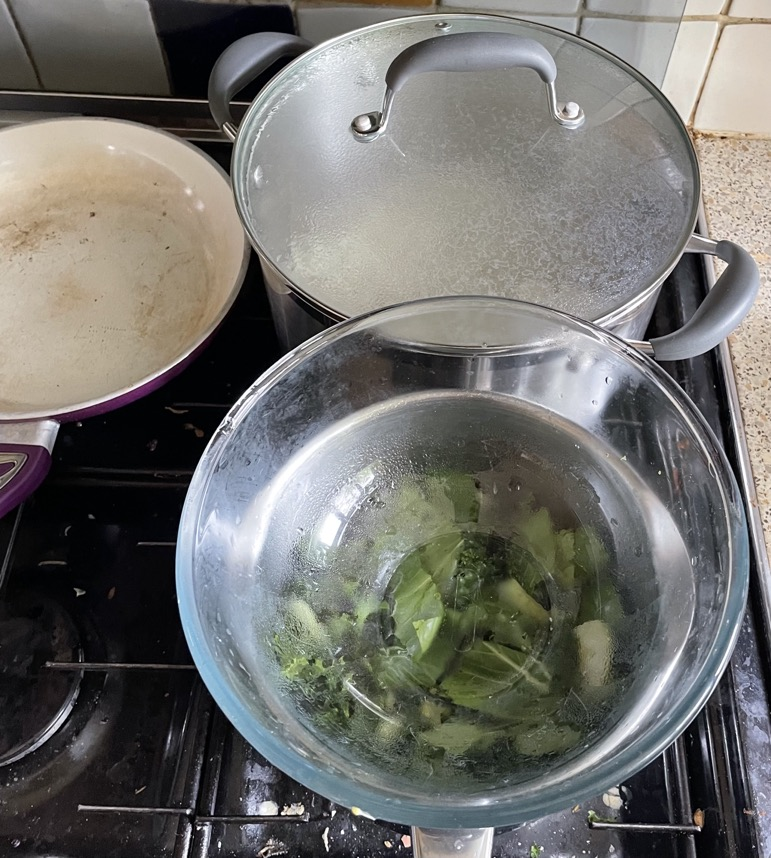

Asian broths
Recipes
Cooking
- Large pot: Cover udon with boiling water
- Large saucepan: Heat veg with broth
- Frying pan: tempeh / prawns / mini corn / carrot batons
Notes
- Wash veg in 1l Pyrex bowl
- 500ml Pyrex bowl for cooked ingredients
Ingredients
- Velvet chicken
- Stir fry veg
- Carrot ribboned or julienned
- Broad beans skin removed
- Baby corn
- Pak choi
- Sugar snap peas
- Water chestnuts
- Kale
- Nori
- Mangetout
- Tenderstem broccoli
- Daikon / radish
- Ginger pickled
Noodles
- Udon 150g per portion
- Soba 100g per portion
Made
- Velvet chicken, prawns, tempeh, pak choi, kale, carrot, udon, Itsu veg broth
- Prawns sauted in sesame oil, baby corn sauted in sesame oil, pak choi, bamboo shoots, udon, Itsu veg
broth
- Tofu, fried mushrooms, pak choi, udon noodles, broth
- Prawns, baby corn, sugar snap peas, ribbon noodles, Itsu veg broth
Pics
